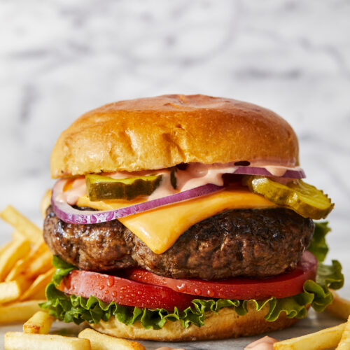

Mert's Favorite Recipes
This web site serves the purpose of gathering my favorite recipes of all time and sharing with people that are intrested in new and fun recipes that they can try.
Burger Recipe
As most of the people i like good old burger with american chese so its basically cheseburger

- cheese
- groundbeef
- salt
- pepper
- onion
- lettuce
- pickle
Preparation of Cheeseburger
STEP 1
Crumble the mince in a large bowl, then tip in the breadcrumbs, cheese, Worcestershire sauce, parsley and eggs with 1 tsp ground pepper and 1-2 tsp salt. Mix with your hands to combine everything thoroughly.
STEP 2
Shape the mix into 12 burgers. Chill until ready to cook for up to 24 hrs. Or freeze for up to 3 months. Just stack between squares of baking parchment to stop the burgers sticking together, then wrap well. Defrost overnight in the fridge before cooking.
STEP 3
To cook the burgers, heat grill to high. Grill burgers for 6-8 mins on each side until cooked through. Meanwhile, warm as many buns as you need in a foil-covered tray below the grilling burgers. Let everyone assemble their own, served with their favourite accompaniments
ABOUT ME
CONTACT